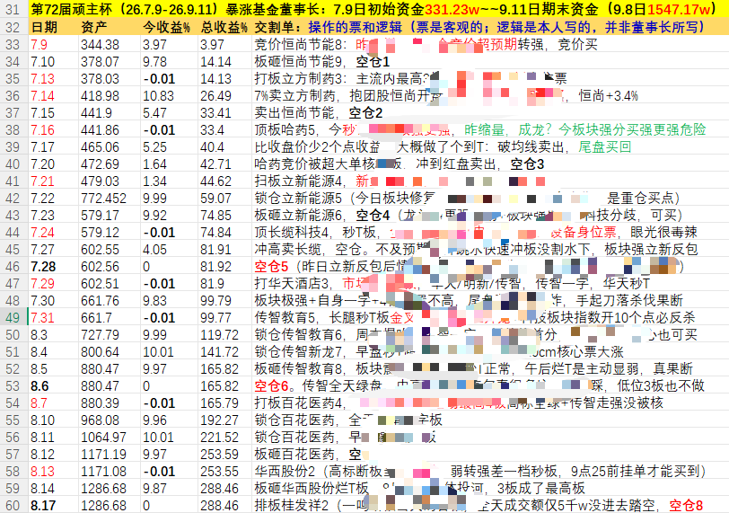
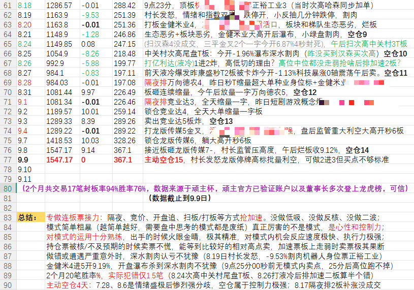
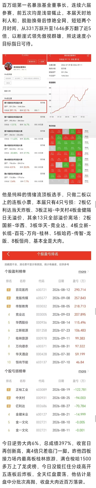
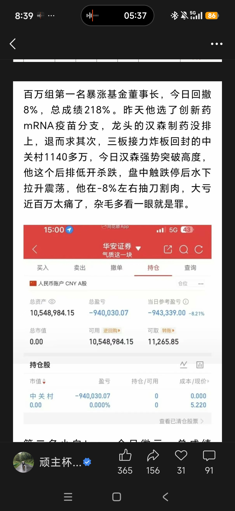

环境
- 短线赚钱效应是否有容错
- 高标是否被杀跌或监管压制
- 大盘是否支持资金做高度
Trading Playbook / Board Relay
这套模式的核心不是每天出手，而是等到环境、题材、身位、买点、仓位五件事同时对齐。环境好，敢在爆量弱转强里前置，甚至全仓重仓打强加速；环境差，空仓或板上就走。炸板和情绪变坏时，卖点必须比观点更硬。
董事长模式的稳定性来自过滤，不来自预测。每一道门都要缩小可交易范围，直到只剩题材内真正有辨识度的强身位。
真正要避开的不是接力本身，而是情绪差时的中位非龙头接力。
没有特别好的票，没有真正的龙头票，就不做中高位接力。尤其当一鸣食品这类高标被杀、监管压制明显、短线容错变差时，中位接力容易直接爆炸。
做一进二或二进三，重点看新题材能否打出板块效应。二进三更优，因为已经筛掉一批不够强的标的。
有高标、有容错、有板块回流预期时，才看三板以上强身位的爆量弱转强和转强确认。
二板爆量烂板后，三板缩量转强、弱转强、T字回封，是博弈主升切入的重要节点。
五板也可以接，但必须板上确认。连续加速不爆量，后面再爆量往往意味着风险释放。
董事长的厉害之处，是在关键标的上敢把仓位打够；但他也会在确认失败、炸板或监管压力出现时快速撤。
环境和板块已经走强时，围绕强身位板做爆量弱转强、爆量炸板回封。利新能源、传智教育这类动作，核心是提前拿到关键票仓位。
环境不够放松时，等转强确认再打。比如二板爆量烂板后，三板弱转强成功，或者四板极致弱转强再确认参与。
龙头买不到，就退而求其次；题材有热度，就随便找低一位；中位不是最强，却想蹭情绪。这些都不是模式，是亏损来源。
小肉来自隔夜竞价抢加速板，大肉来自扫板打板、板上扫进去。共同前提只有一个：强板块效应下，二板及以上高标升位。
他强在仓位管理的极致：环境好、板块强、模式内机会出现时，敢重仓甚至全仓打进去；生态恶劣、A股整体情绪极差、板块或高标不对时，马上走，割肉也果断。不是每天都有仓位，而是只在自己的模式里给仓位。
当题材和高标已经明牌，竞价阶段抢加速板，吃的是强一致的溢价。这类机会反应要快，但必须建立在板块效应和整体情绪允许的前提上。
真正的大肉，多数是在板上扫进去。不是低吸想象，而是在强板块里做高标升位，确认资金态度后把仓位打满。
强加速不是无脑冲。量能、环境、短线情绪、板块持续性都要对齐。环境好时买点前置；环境差时，即使上板也可以板上走。
专注做好自己的模式就足够了。模式少而精，才能屏蔽市场噪音和自己的情绪干扰，快速识别机会和陷阱，长期获得概率优势。贪多去学别人的模式，往往要先用大亏去磨合。



同一只票换个市场环境，结论可能完全不同。这里按模式要素拆解，而不是做事后崇拜。
在强板块效应和情绪支持下敢于打进去，体现模式内机会反应快、仓位敢给。
从 331 万到 1646 万的资金曲线，本质是模式专注、强加速、强板块和空仓纪律共同作用。
AI应用分支龙头，二板爆量后次日转强一字，直接打板进入。
农业首板已有题材效应，二板爆量烂板，三板弱转强，四五板继续加速。
三板时已进入观察，四板极致弱转强后参与，属于确认后上车。
7月21日爆量板，偏前置买点，后续到风险点强制离场。
7月31日爆量炸板回封，属于爆量弱转强前置动作。
消费方向龙头，若对应板块效应满足，可以作为题材前排参与。
液冷方向本该做更强的康盛，却选择低一位的亿利达，结果炸板并小亏出局。
创新药分支龙头汉森制药没排上，退而求其次做中关村，后排低开杀跌造成大回撤。
四板晋级龙头，但受高标一字闷杀和板块低开回调拖累，高开后跳水，水下约 -1% 果断止损。
给出较高溢价，说明低位分支强身位在合适环境里可以有效套利。
两张截图不是用来证明他永远正确，而是提醒你：强者也会被后排和情绪误伤，区别在于他会很快认错。
排不到龙头，选择次强；看到题材热，买了低一位；情绪高标杀跌，还去做中位。这些动作会把一个原本清晰的模式，变成随手交易。


把复杂判断拆成固定问题，减少临场被分时、盈亏和情绪牵着走。